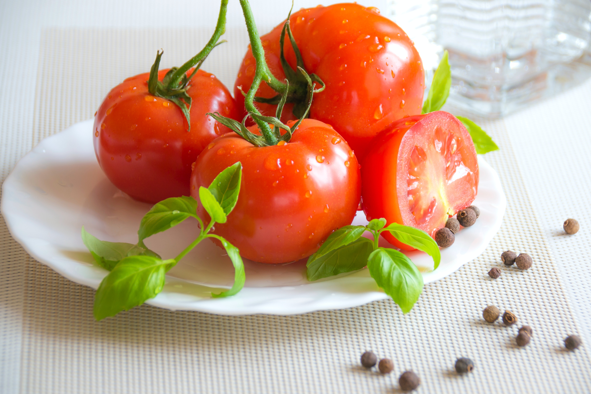

Árvores Frutiferas

O que são?
São todas as árvores e plantas que produzem frutos com a intenção de disseminar suas sementes.
Como o Fruto se forma?
Através do desenvolvimento do ovário da flor e podem ser divididos em três principais partes:
O pericarpo que é a parte externa.
O mesocarpo que é a parte carnosa da fruta.
E o endocarpo que é a parte mais interna do fruto.
Qual a classificação dos frutos?
Frutos Simples
Os frutos simples são originários de um só ovário e de uma única flor.
Exemplos: tomate e cereja.

Os frutos simples podem ser do tipo seco ou carnoso.
Frutos Secos
Os frutos secos são os que possuem pericarpo pobre em água. As substâncias nutritivas concentram-se na semente.
Os frutos secos classificam-se conforme a abertura do pericarpo, nos seguintes tipos:
Frutos deiscentes: são os que o pericarpo se abre durante o amadurecimento.
Exemplo: castanha.
Frutos indeiscentes: são os que o pericarpo não se abre naturalmente.
Exemplo: girassol.

Frutos Carnosos
Os frutos carnosos possuem pericarpo rico em água e substâncias nutritivas.
Os frutos carnosos podem ainda ser classificados em:
Baga: frutos com várias sementes facilmente separadas do fruto.
Exemplo: goiaba, mamão e melão.
Drupa: frutos com semente envolvida por um endocarpo duro, também chamado de caroço.
Exemplo: azeitona, abacate e ameixa.
Frutos Agregados
São chamados frutos agregados são os que se originam de uma flor com muitos ovários separados. Também são denominados de frutos apocárpicos.
Exemplo: magnólia.
Frutos Múltiplos ou Infrutescência
Os frutos múltiplos desenvolvem-se de inflorescências, nas quais os muitos ovários fundem-se e formam uma estrutura única.
Exemplos: Figo, abacaxi e amora.
Número de Sementes
Frutos Monospérmicos: são os que apresentam uma única semente. Exemplo: abacate.
Frutos Polispérmicos: são os que possuem mais de uma semente. Exemplo: laranja.
Crescimento do fruto
Os frutos crescem somente nas plantas angiospermas, que são os vegetais desenvolvidos.
Eles surgem após a polinização e fecundação da oosfera. Estimulados por hormônios vegetais liberados pelo embrião contido na semente, o ovário sofre hipertrofia e converte-se em fruto.
Quando amadurecem, os frutos assumem cores, aromas e sabores que chamam a atenção dos animais. É a estratégia da natureza para usar os animais como dispersores das sementes.
Após ingerir o fruto, os animais soltam as sementes longe da planta, permitindo que cresça em outros locais.
Fruto, fruta e pseudofruto
Os termos fruto, fruta e pseudofruto possuem significados diferentes:
Fruto: é o resultado do desenvolvimento do ovário da flor.
Fruta: termo popular empregado para frutos e pseudofrutos comestíveis e de sabor adocicado.
Pseudofruto: qualquer estrutura que se assemelhe a um fruto, mas que não seja formada pelo amadurecimento do ovário e sim de outras estruturas da flor como o pedicelo e receptáculo.